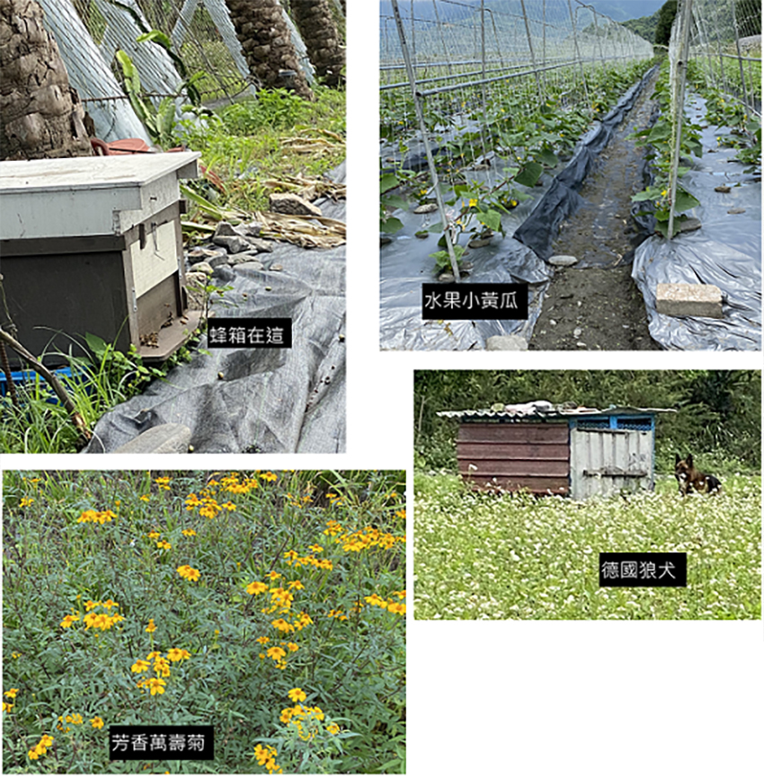
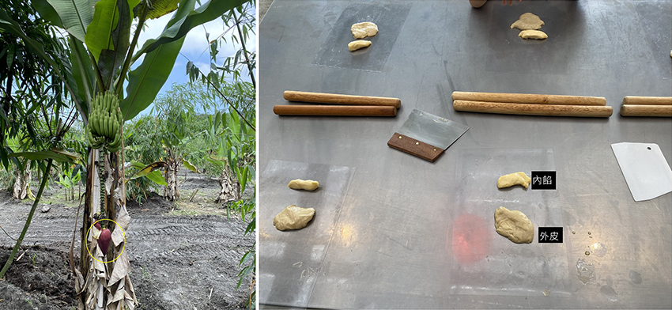

四月份時參加兒子幼兒園舉辦的親子活動，來到了位在宜蘭的耕堡農場(位於宜蘭縣三星鄉三星路八段238巷長埤68號；聯絡電話：0988015066；網址：https://www.kingbaoorganic.com/)。幼兒園安排的活動有：農場導覽(拉拉車) ; 挖地瓜→控窯、午餐(buffet) 、可愛動物餵養和自由活動DIY牛舌餅。我看到行程的時候，心想：天啊！好無聊！地瓜跟牛舌餅我也不愛吃啊，沒想到實際參與後，出乎我意料的好玩。
抵達農場後，家長跟孩子們先到休息區裡集合，休息區前方有販賣部，另一邊是展售攤，賣著園區內種的有機作物跟加工食品。我們分成三批人，分別坐拉拉車導覽/ 挖地瓜/ DIY牛舌餅，之後再交換行程。原來拉拉車是由很多台小車串在一起，由前導車拉著行走。兒子還沒坐過這種型態的導覽車，笑開懷了，連我這個大人坐起來也感到很新鮮。
我們搭乘的拉拉車出發囉，座位上沒有安全帶，並且路上會顛簸，小朋友無法獨自乘坐 要由家長抱著。 先經過升起裊裊炊煙的窯，窯是農場自己設計的特殊造型，等木材燒到碳化八成，再放入用鋁箔紙包好的地瓜。
|  |
接下來就是有機作物巡禮，蜂箱給瓜類授粉，可以看到箱外有聚集一些蜜蜂水果；芳香萬壽菊，烘乾可泡茶，聞起來有百香果味，很奇妙；仔細看 照片中有德國狼犬，牠是幫忙看守地瓜園的，因為會有山豬來吃地瓜。
隨著導覽看到了香蕉跟竹子種植在一起。香蕉葉夠大，用來遮竹筍的陰，因為筍出頭若曬到陽光會苦，一般出頭就要覆土。雖然農場裡種的是甜龍筍，已經是不太會苦的品種了，而行經有機園區立牌，這區對我來說是一片雜草的植被，沒想到原來是金針...
(遠方的農人在拔雜草)這樣的天氣很適合出遊，沒有下雨，又有雲朵遮陽，還有輕風拂面；有點顛簸的乘坐體驗加上風和日麗的田野風景，大家心情都很愉悅。其實還有很多作物沒提到，但田邊沒有告示牌，我記性又差，回家整理照片的時候，嗯....這張是雜草1號；那張是雜草2號之類的，所以沒辦法多做介紹。
拉拉車導覽結束後，接下來是挖地瓜體驗。只開放一條田壟給遊客體驗，其他的不要亂挖喔。老師講解怎麼使用鋤頭選．並請大家選擇一個有藤露出的地方站定位(黃圈處)。
等老師講解完後，便開始挖地瓜囉。用鋤頭鑿開砂土之後，順藤摸瓜，從粗藤的兩邊開始撥土。挖地瓜體驗的地瓜有兩個品種：台農57號黃地瓜 跟市價較貴的紫心地瓜。有家長很幸運地挖到紫心地瓜。挖到的地瓜可以帶回家，因為怕吃不玩浪費，所以我們只挖了可吃完的量。
|  |
趁著拉拉車來接我們回休息區的空檔，我問了老師一些問題：比如上面那張紫紅色的椎狀物(黃圈處)是什麼？原來是香蕉花；玉米筍跟一般的玉米品種是不一樣的；玉米筍不施農藥怎麼防蟲害呢？因為旁邊有種香草植物( 芳香萬壽菊)，加上山風，地理環境很好，所以蟲害少。
拉拉車把大家送回休息區之後，要把剛剛挖地瓜時手上的沙土洗乾淨，開始做牛舌餅。不曉得是不是有弄到地瓜的白色乳汁，黏在手上的土，搓不太掉，最後是用濕紙巾摳下來的。照片裡麥芽色的是外皮，另一個是內餡，都很油+_+，糕餅類熱量真的很可怕。
做好的牛舌餅放到烤盤上，工作人員會放到大烤爐烤，烘培紙上有編號，拿走自己編號的小紙片，烤完用號碼認領。然後從剛剛採的地瓜，挑要拿去烤的，洗乾淨上面的土，用鋁箔紙包起來，準備窯烤。
很快到了午餐時間，中餐是自助式的因為大家在夾食物，不好意思因為拍照妨礙別人用餐，就很快速的拍一下照片，所以照片有些模糊了。菜色營養豐盛又美味，不過最後還剩好多，若不是我隔天才要從宜蘭回台北，一定會打包回家。而大人的甜點是芋頭冬瓜冰，吃起來有芋頭味，但比一般的芋頭冰清爽；小朋友的是膠囊香草霜淇淋，我第一次見到這種玩意兒，生產的公司位在台南叫做「德盈」。小朋友都很興奮，霜淇淋的量還不少喔。
午餐過後 ，木材碳化的差不多，地瓜可以入窯囉。窯上的鍋子設計成窯烤地瓜時可以順便煮東西，不過用來煮什麼我忘了。
窯烤地瓜的空檔，來去採紅鬚玉米筍。這是學校老師幫忙爭取的額外行程，感謝農場跟老師。前去玉米筍田的路上，老師順便導覽。途中見到了，未成熟的土鳳梨；火龍果植株；用檸檬香茅做生物防治法。
園區使用的是地下水，不能用山泉水，因為山上有種茶跟高麗菜，怕有農藥；捕蠅器沒辦法拍得很清楚，結構是寶特瓶位在箱子中間，箱子底下放魚肉吸引蒼蠅，網子裡面都是蒼蠅屍體。到了玉米筍田，老師示範怎麼採玉米筍，先往外拽再轉下來，一人可採兩根 。
開採囉，採的時候發現有這種蟲，老師也不知道是什麼品種，看起來像蛾類。我查了一下應該是分秘夜蛾，因為頭部有兩條黑線。
| (除了我的家人之外 其他人上黑條保護隱私) |
覺得紅鬚好像頭髮，小美眉拿著一束玉米筍好像捧花，可愛極了。小朋友們拿著玉米筍樂不可支。
採完玉米筍的自由活動時間，孩子們有的玩鞦韆，有的跑去可愛動物區餵羊。我看有人就拿剛剛採的玉米筍外皮或旁邊樹上的葉子餵，心裡覺得 ：好像怪怪的捏，不用買飼料餵喔？但想歸想 ，之後還是隨波逐流的剝起手上的玉米筍外皮，給兒子拿去餵羊，祈禱這些羊兒安好……
接下來去認領了地瓜跟牛舌餅，窯烤前地瓜有用奇異筆在鋁箔紙上寫上名字。奇怪，烤地瓜怎麼沒有很好吃XD沒有香味，也沒有很甜，在想是不是鋁箔紙的關係讓香氣出不來。牛舌餅的烘培紙上有寫數字，認數字自行把牛舌餅裝在農場提供的紙袋帶走，味道還行。
到這邊農場的活動已經結束，兒子還不想走，就讓他再玩一下。吊床中間的是學校老師，兒子自己跑去老師旁邊想要一起坐吊床，照片遠方有一棟白色小屋子，裡面長這樣，應該是可以住人的吧?
我兒子帶頭玩沙子，其他孩子看到也想玩，被家長阻止。請容我失禮了，孩子我是用髒養的，在沙子上滾我也無所謂，衣服回家洗一洗就好囉。要離開農場的時候，兒子看到雞出來逛街，他竟然賊笑說：很好吃的大餐。我平常沒餓著他啊...
離開農場後，有在宜蘭住一晚，隔天回台北已經晚上。這期間玉米筍都沒有冰，因此再隔天，就處理了玉米筍跟地瓜，以免放到壞掉浪費食物。地瓜用刷子將砂土洗淨，帶皮入電鍋蒸；玉米筍依照老師說的，把外面較老的皮剝掉後，整隻下去煮，煮出來的水就是玉米鬚水了，我把已經變質的皮剝掉，切掉根部，總共六根玉米筍煮出一鍋玉米鬚水。老師特別交代只有有機的玉米筍可以這樣做，我想一般的應該只是煮出一鍋農藥水吧。
完成了一道看起來很難吃實際上也不美味但健康的早餐，玉米鬚水 + 蒸地瓜 +水煮玉米筍，剩下的地瓜蒸熟放涼入冷凍庫保存。
結語：
因我很喜歡聽導覽，所以這次行程我很滿意，學到了很多知識，若只是單純的走走逛逛這個農場對我來說就很無聊了；農場提供的buffet雖沒有到超級美味，但感覺得出來有用心製作，用的材料又是農場自產的有機作物，吃起來非常安心，整體來說推薦三五好友或家人一起來這玩包套行程。